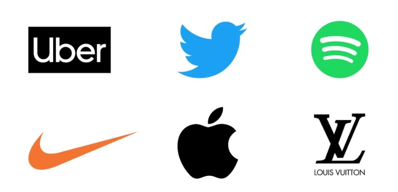
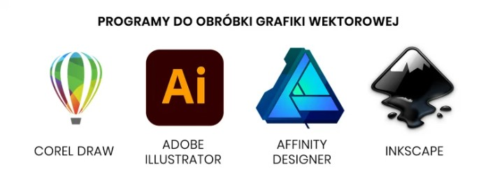

Co to jest grafika wektorowa?
Grafika wektorowa to rodzaj grafiki komputerowej, która używa matematycznych równań do przedstawiania obrazów. Zamiast zapisywać informacje o każdym pikselu, jak ma to miejsce w grafice rastrowej, obrazy wektorowe są tworzone przy użyciu linii, krzywych, punktów i wielokątów. Dzięki temu grafika wektorowa ma szereg zalet, takich jak skalowalność i możliwość edycji.
Zalety grafiki wektorowej
Skalowalność: Grafika wektorowa może być dowolnie powiększana lub pomniejszana bez utraty jakości.
Mała waga pliku: Zwykle mniejszy rozmiar pliku w porównaniu do grafiki rastrowej.
Łatwość edycji: Możliwość łatwej zmiany kształtów, kolorów i rozmiarów.
Precyzja: Umożliwia tworzenie szczegółowych ilustracji.
Przykłady zastosowań grafiki wektorowej
Logo i identyfikacja wizualna: Wektorowa grafika jest idealna do tworzenia logotypów i materiałów reklamowych, które wymagają skalowalności i wyrazistości na różnych nośnikach.
Ilustracje i rysunki: Grafika wektorowa jest popularna w ilustracjach, ponieważ pozwala na łatwą edycję i dostosowanie do różnych rozmiarów.
Projektowanie stron internetowych: Wektorowe ikony i elementy interfejsu użytkownika są często wykorzystywane w projektach stron internetowych i aplikacji.
Grafika 3D i animacje: Wektory są wykorzystywane do tworzenia prostych animacji 2D i efektów 3D.

Jak zacząć pracę z grafiką wektorową?
Aby rozpocząć przygodę z grafiką wektorową, wybierz jeden z popularnych programów do tworzenia grafiki wektorowej.
Zacznij od nauki podstawowych narzędzi, takich jak tworzenie prostych kształtów i linii. Później możesz przejść do bardziej zaawansowanych technik,
takich jak edytowanie ścieżek czy dodawanie efektów.
